INITIALISAE-PREFLOW procedure creates the initial pre-flow in the flow network.
It fills to capacity each edge that is leaving the source s and all other edges are initialized with no flow.
It also initializes the height of s to  and all
other nodes to 0.
and all
other nodes to 0.
It is further used in GENERIC-PUSH-RELABEL algorithm.
Referring to the procedure INITIALISE-PREFLOW (G,s) on page number 740,
To calculate the value of s.e (Here s=source and e=excess flow that is s.e donates access flow to source) after the procedure INITIALISE-PREFLOW (G,s) terminates
Initially, s.e=0
So,
is nothing but
Here =capacity of edge from s to
So its summation is total of capacity of edges from source to its adjacent vertices. That is if no flow limitation is there in term of capacity on in-between nodes, this summation will be equal to the maximum flow for G (if no restriction then the flow which is sent from source is same as that of the sink).Since in real situations there are flow limitations on in-between nodes so the above summation will always be less than or equal to the maximum flow for G.
So, 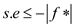
Where, is a maximum flow for G.
Hence, proved
A fast algorithm to find a minimum cut in G
According to the maximum flow minimum cut theorem:
The maximum flow has the value equal to the minimum cut.
Now given the maximum flow, value of maximum flow can be determined by following algorithm-
list E
max_flow = given
= |G.V| - 2
while ( )
)
partition the set of vertices in S and V - S
capacity = check for the value of maximum flow
if (max_flow = capacity )
save the vertex set to E
else
add to vertex set S and remove it from vertex set V - S
++
return E
end
The algorithm checks for the possible vertex sets the value of capacity of cut with the given value of maximum flow and then returns the partition set.
The algorithm uses the saturation of an edge to stop from pushing the weight from one vertex to another.
Saturation refers to the condition when the flow over an edge becomes equal to its capacity.
It is given that the given graph has V vertices and E edges and the capacities of the edge are in the set {1, 2, …, k}.
The information required to analyze the algorithm is as follows:
• The algorithm visits each vertex to perform the push-relabel operation.
• Each edge with capacity k can have at max k-1 non- saturating push before performing a push operation which makes it saturated, that is at most k push operations can be applied on an edge.
The analysis of the given algorithm is as follows:
• The time it takes to visit a vertex is O(1).
Therefore, the time it takes to visit V vertices is O(V).
• The time it takes to visit an edge is O(1).
Therefore, the time to take to visit E edges is O(E).
• The time it takes perform a push operation is O(1).
An edge with capacity k can perform up to k push operations.
Therefore, an edge with capacity k takes O(k) time to perform the push operations.
• Since there are E edges in the graph therefore, the total time to perform the push operations is O(kE).
The total running time of the algorithm is the addition of all the operations in the algorithm.
The running time of the algorithm is therefore as follows:
Consider the algorithm INITIALIZE-PREFLOW on page 740.
If we set , we have to change our definition of a height function to allow , rather than .
The only change we need to make to the proof of correctness is to update the proof of Lemma.
The original proof derives the contradiction that , which is at odds with .
When , there is no contradiction.
As in original proof, assume that there is a simple augmenting
path  where
and
where
s represents the source and t represents the
sink.
where
and
where
s represents the source and t represents the
sink.
So, that  .
.
It had been saturated in Initialize-Pre-flow, which means that we had to push some flow from to.
For that to happened, we must have .
If we set , that means was at the time. Since then, did not decrease, and therefore, we have the following:
…… (1)
Working backwards over our augmenting path, we have the following:
for  = 0,
1......
= 0,
1...... .
.
So, for , where (height of sink is always considered to be zero).
As before, because the augmenting path is simple, .
So,
…… (2)
Comparing equation (1) and (2).
Since (2) contradicts (1) the above assumption was wrong.
So, lemma 26.17 on page 742 is still true.
Thus, if the line 6 of INITIALISE-PREFLOW changes to then, it would not affect the correctness or asymptotic performance of the generic push-relabel algorithm.
Consider the GENERIC-PUSH-RELABEL procedure,
Is the distance from u to v in the residual network .
.
Distance are nothing but, number of edges between the vertices.
Case 1:
When
Let there is a simple path p from u to t
in.
Let path p be
Here,and =t
Here
And
Adding above we will get
+k
Here =0 because is sink.
k
is k in this case(since there are k edges in the path)
So
Hence, provedCase 2:
When
Let there is a simple path p from u to in.
Let path p be
Here,and =s
Here
And
Adding above we will get
+k
Here = because
is
source.
+k
is k in this case (since there are k edges in the path)
+
That is
-
Hence, proved
Flow Network
A flow network, in the most basic form, is a directed graph. Each of the edges has a capacity assigned to it. In the network a certain amount of flow goes from each edge of the network. There are certain nodes in the graph fromwhich the flowstarts and to which the flow ends. These two nodes are calledthe origin and destination ofthe network respectively.
In the diagram below the node s is the origin of the network and the node t is the destination or sink of the network. Each of the graph edge has a capacity. The capacity defines the data value that can go through that edge. The capacity is always a positive integer. One more thing is that if there exists an edge from a vertex v1 to vertex v2 than there can be no edge from v2 to v1.

In the above diagram vertex s is the source and the vertex t is the sink or destination. The capacity of each edge is shown alongside the edge. As the edge from s to v1 has the capacity of 16.
A flow network has various applications in practicality. It is used in data warehouses, scientific research and electricity distribution etc.
Generic push relabel algorithm:
The generic push relabel algorithm is used for computing maximum flow from origin to destination in a network. The distance of the source vertex that is the vertex from where the flow is started is fixed at and the height of sink vertex is fixed at value 0.
The height of all the other vertices through which the flow is passed to sink is initially set to 0 which increases with time.
The algorithm uses the method INITIALIZE-PREFLOW in which the height and the excess flow for each vertex is set. It also initializes the flow for each edge in the network and the quantity of the flow for the edges adjacent to the source vertex is set.
The flow for the edges going from the source vertex is set to its maximum value that is equal to the capacity of the edge.
It has two major operations involved in it, PUSH and RELABEL.
PUSH  :
:
In the push operation the excess flow is pushed from one vertex to the other vertex. It is pushed from a vertex at higher level to a vertex at the lower level.
It may be possible that the flow in an edge from the lower level vertex to the higher level vertex is positive but the push operation will not support this type of flow. The conditions and the action that are performed in the push operation are as:
Precondition:
To perform a push operation two conditions must be fulfilled:
1. Thevertexuis active or overflowing that is excess
flow and the
residual capacity
and the
residual capacity .
.
2. The height of vertex u must be larger than the distance of vertex v that is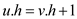
Action:
Push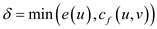from vertex u to vertex v.
Labeling:
A labeling is said to be valid only when a function  from
vertices to non-negative integers.
from
vertices to non-negative integers.
RELABEL 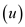:
The algorithm considers that the flow can be pushed only to the vertex, which is downhill from the sender vertex.
So, for any vertex u if there existan edge to the any vertex which is not saturated yet and they both are at the same level or at the same height then the height of the vertex is increased by one. That is the vertex u is relabeled and in the relabel operation the height of vertex u is updated as:
Precondition:
To perform a relabel operation two conditions must be fulfilled:
1. The vertex uis the active overflowing vertex that is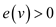
2. For all the vertices v in the residual network for which there is an edge from vertex u to vertex v necessarily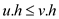.
Action: Relabel the vertex u by increasing its height as: 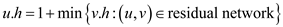.GENERIC PUSH AND RELABEL ALGORITHM:-
h= labeling
p=path
// initialize the labeling
1.  and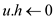for
all
and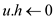for
all 
// initialize pre flow with its respective capacity
2. 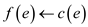for and
for
all other edges
and
for
all other edges
3. while with
with
 do
do
4. if residual
edge in  and
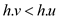then
and
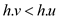then
// comparing the label in given graph
5. if is forward
then
// push it forward
6. increase by min
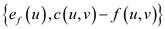
by min
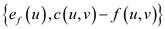
7. if is backward
then
// push it backward
8. decrease by min
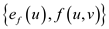
// relabeled node
9. else
10. return f
Diagramatical Representation GENERIC PUSH AND RELABEL ALGORITHMoperations:
1. In the flow network the initial preflow labeling is shown. The height or the label of the node represented inside the box node and the capacity of each edge is onto the edge.

2. An active vertex is selected which is connected with the source vertex and the flow of this edge is as much as its capacity. Change the label of selected vertex from 0 to 1.
3. The excess from the selected active vertex is pushed to
the vertex
is pushed to
the vertex .
.
4. Now the vertex is selected
and relabeled to 1 as shown in the graph.
5. The exces from the vertex is pushed to
the sink.
6. Again the vertex is selected
and relabled to 5.
7. As the maximum capacity of edge is 1 so no
more flow can be passed to the sink and so the excess flow from the
vertex is pushed
back to the source vertex.
8. The maximum flow that can be passed from source vertex to the sink vertex is 1 so the maximum flow of this flow network is 1.
Analysis of algorithm:
In the above modified generic push relabel algorithm in each of its particular iteration a push or a relabel operation is performed. The total of the whole relabeling operations done is less than.
The number of non saturating push activities completed is at maximum of and the total number of saturating push operations (generic case) completed is largest of.
The maximum range of variation in the algorithm is because in residual network flow depend upon edges and edges depend upon vertices that are used to form that edges.
Hence, summing up all together the time complexity of above algorithm is
The maximum height that a vertex can have is as follows:
Since, the heights do not decrease, the number of vertices that are overflowing are as follow:
Therefore, over all the vertices, the contribution of relabels to 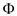 would be at-most as follows:
A push which is under saturation, from the vertex u to v increase by at-most as follows:
And the maximum count of pushes under the category of saturation is as follows:
Therefore, the total contribution over all the pushes under the category of saturation to is max-to-max as follows:
Since, the pushes under the category of non-saturation decrease by at least on and must be 0 as per the termination.
Therefore, the maximum number of pushes under the category of non-saturation is as follows:
Hence, by using the above facts which are as follows:
The count of saturating pushes can be bonded to .